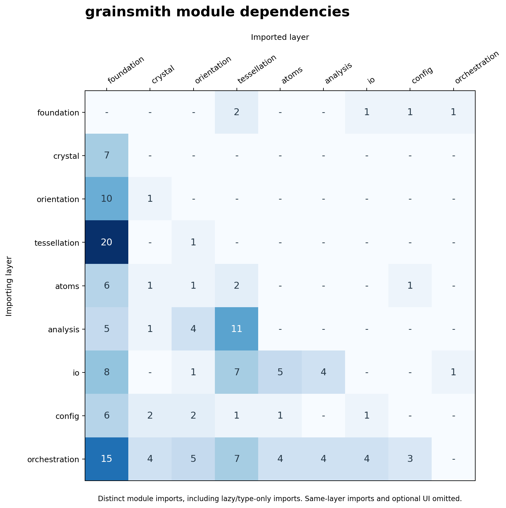

Architecture
This page explains how grainsmith works end-to-end: the stages a run passes
through, the data objects that flow between them, and how the Python package is
organised. It is the map an advanced user (or a developer extending the code)
needs before reading developer.md for the programmatic API or
geometry.md for the grain-geometry backends.
New to grainsmith? Start with the user manual; come back here when you want to know why a run does what it does.
1. The one-paragraph model
grainsmith turns a declarative YAML config into a space-group-aware
atomistic polycrystal plus a full analysis bundle. A run is a fixed chain of
stages: build the crystal → seed grain centres → partition space into grains
(the tessellation) → assign phases and orientations → optionally shape
the boundary-angle distribution → fill each grain
with correctly oriented lattice atoms → remove overlaps at the boundaries →
analyse the microstructure → write the outputs. Every stage is a pure function
of (inputs, RNG stream), so the same seed reproduces the same model
bit-for-bit within the documented environment and configuration scope.
QA gates (G1–G26) — some construction-enforced, some
evaluated and recorded into summary.csv — refuse to emit (or flag) a model
that is physically invalid or of uncertain quality — the central design
commitment of the code.
2. Pipeline stages and dataflow
grainsmith.pipeline.run(config) executes the stage chain and returns a
RunResult. The orchestrator only assembles stages, collects wall-clock
timings, and runs the gate registry; each stage itself is a self-contained pure
function (pipeline._stage_*).
| # | Stage | Module(s) | Produces | Gates evaluated |
|---|---|---|---|---|
| 1 | Crystal | crystal.cell, crystal.spacegroup, crystal.verify |
CrystalData (cell matrix, symmetry-expanded basis, proper rotations, d_nn, densities) |
G2 space-group round-trip |
| 2 | Seeding | seeding |
(N,3) grain seed points (Poisson / Lloyd-relaxed) |
— |
| 3 | Tessellation | tessellation.* (incl. perturbed) |
a Tessellation object (grain ownership, adjacency, cell margins) |
G3–G6 at construction; G11 SDOT-fitted volumes; G13/G19/G20 (perturbed_distance only) |
| 4 | Phases (optional, config phases:) |
phases |
per-grain phase assignment | G15 phase volume fractions |
| 5 | Orientation | orientation.samplers, orientation.quaternion |
(N,4) grain orientation quaternions |
G14 single-crystal box/lattice commensurability |
| 6 | Angle Shaping (optional, config orientation.mdf_target) |
orientation.mdf, orientation.odf |
area-weighted disorientation-angle assignment; optional volume-ODF TV cap | — (G12 and G22 are evaluated later on the final network and orientation assignment) |
| 7 | Fill | atoms.fill |
AtomBlock (positions, species, grain id) |
— |
| 8 | Overlap | atoms.overlap |
AtomBlock with boundary overlaps removed |
G7 min-distance |
| 9 | Doping (optional, config doping:) |
atoms.doping |
AtomBlock with substitutional/interstitial dopants inserted |
G17 dopant composition + enrichment, G18 dopant min-distance |
| 10 | Analysis | analysis.grains, analysis.boundaries, analysis.statistics, analysis.curvature, qa |
GrainReport[], BoundaryReport[], statistics |
G3 (voxel), G8 count, G9 composition, G12 angle target, G16/G21 curvature, G22 ODF drift, G23 angular/CSL distinction, G24 final volume targets, G25 component fidelity, G26 atom/volume weighting; each conditional on its applicable path |
| 11 | Write | io.* |
LAMMPS data, CSVs, JSON, methods, plots | G10 LAMMPS round-trip |
Stage numbers are execution order, not source-code phase labels. Seeding uses box geometry and the configured separation; volume-balanced orientation components require the FINAL tessellation volumes. Imported voxel fields and single-crystal builds bypass ordinary seeding. Read the table top-to-bottom for the ordinary polycrystal path; optional paths are described in the manual.
Why this order
The dependencies are physical, not incidental:
- Crystal before everything — the nearest-neighbour distance
d_nncomputed here sets the overlap cutoff used at the fill stage, and the symmetry operations are needed both to expand the Wyckoff basis and to reduce misorientations to the disorientation (fundamental zone). - Seeding before tessellation — the tessellation is a partition of space
around the seed points; the minimum seed separation also bounds the admissible
boundary-warp amplitude (
G6). - Tessellation before fill — the fill asks the tessellation, for each
candidate lattice point, which grain owns you? (
Tessellation.owns), so the partition must exist first. - Fill before overlap — atoms from adjacent grains can land closer than the
configured cutoff along a boundary; overlap removal (
G7) enforces that geometric separation. It does not establish mechanical equilibrium or validate a chosen interatomic potential. - Analysis and write last — they only read the finished model.
3. The data objects that flow between stages
Five objects carry state down the chain. Their exact field contracts are in
developer.md; here is what each is
and where it comes from.
CrystalData(pipeline.CrystalData) — the crystal-stage output. Holds the(3,3)cell matrixA(columns are the lattice vectorsa₁,a₂,a₃in Å), the symmetry-expandedBasis, the proper point-group rotation quaternionssym_quats, the spglib verificationdataset(consumed byG2), and the derived scalarsd_nn,rho_atom,density_g_cm3. For a multiphase run there is oneCrystalDataper phase.Tessellation(tessellation.base.Tessellation, abstract) — the grain partition. Every backend (flat, power, warp, weighted, voxel) implements the same six-method interface, so the fill/overlap/analysis stack is backend-agnostic. Seegeometry.md.- Orientation quaternions — an
(N,4)array, one unit quaternion per grain, produced byorientation.samplers(random, fiber-textured, ODF-sampled, or fixed) and optionally reassigned to shape boundary-angle statistics. AtomBlock(atoms.fill.AtomBlock) — the filled model: atom positions, per-atom species, and per-atom grain id, sorted by(grain, generation order). Overlap removal edits this object in place.RunResult(pipeline.RunResult) — the single return value ofrun(), bundling the finishedAtomBlock, theTessellation, the orientation quaternions, the grain/boundary reports, the full gate results, the timing dict, and the list of files written. This is the object a programmatic caller works with; its 18 fields are tabulated indeveloper.md.
4. Package structure
The scientific code lives under src/grainsmith/ in seven importable
subpackages plus a set of loose top-level modules and the ui/ web backend.
| Layer | Subpackage / modules | Responsibility |
|---|---|---|
| Orchestration | pipeline, cli, qa |
assemble stages, expose the CLI, run the gate registry |
| Config | config/ (schema, resolve, introspect) |
pydantic schema, YAML→resolved config, schema introspection |
| Crystal | crystal/ (cell, cif, spacegroup, pointgroup, verify) |
lattice geometry, CIF import, Wyckoff expansion via spglib, space-group verification |
| Orientation | orientation/ (quaternion, misorientation, odf, mdf, samplers, descriptors) |
orientation algebra, volume-weighted texture control, disorientation-angle shaping |
| Tessellation | tessellation/ (flat, power, sdot, warp, weighted, voxel, voxel_import, perturbed, single, base) |
all grain-partition backends |
| Atoms | atoms/ (fill, overlap, doping) |
per-grain lattice fill, PBC-aware overlap removal, dopant insertion |
| Analysis | analysis/ (grains, boundaries, statistics, curvature) |
grain/boundary reports, publication statistics, GB curvature |
| I/O | io/ (lammps, xyz, reports, texture, methods, gnuplot, mesh, publication, common) |
every output writer + LAMMPS parse-back |
| Foundation | constants, rng, seeding, phases, memory, errors, provenance |
shared scientific, resource and provenance primitives |
The
ui/subpackage is a FastAPI backend for an interactive UI ("grainsmith studio") planned for a future release. It is not enabled in this version: it is not part of the scientific pipeline and is not documented here beyond this note, and it only imports the public config and pipeline surfaces. It does ship as source —cli.pyregisters auisubcommand — but that subcommand only reports that the interactive UI is not included in this release; it does not importgrainsmith.uior itsfastapi/uvicorndependencies.
5. Module dependency graph
The runtime stage order is not the Python import graph. Shared QA types, configuration validation and lazy imports create edges in both directions between some aggregated layers, so the static import graph is not a DAG. The matrix below records the declared imports rather than implying a topological execution order.

Rows import from columns. The figure and table are generated together by
python -m tools.gen_module_graph (Matplotlib is needed only for the PNG).
Lazy and type-only imports count; same-layer imports and the optional UI
are omitted from this scientific-engine overview. Package-level re-exports
count as imports from the named package, not inferred transitive edges.
Exact subpackage edges
Each cell counts distinct importer-module to imported-module relationships.
The top-level artifact verifier verify joins pipeline, cli and qa
under orchestration; the package version and provenance helpers belong to
foundation. A test compares this table with a fresh AST extraction.
| imports from -> | foundation | crystal | orientation | tessellation | atoms | analysis | io | config | orchestration |
|---|---|---|---|---|---|---|---|---|---|
| foundation | - | - | - | 2 | - | - | 1 | 1 | 1 |
| crystal | 7 | - | - | - | - | - | - | - | - |
| orientation | 10 | 1 | - | - | - | - | - | - | - |
| tessellation | 20 | - | 1 | - | - | - | - | - | - |
| atoms | 6 | 1 | 1 | 2 | - | - | - | 1 | - |
| analysis | 5 | 1 | 4 | 11 | - | - | - | - | - |
| io | 8 | - | 1 | 7 | 5 | 4 | - | - | 1 |
| config | 6 | 2 | 2 | 1 | 1 | - | 1 | - | - |
| orchestration | 15 | 4 | 5 | 7 | 4 | 4 | 4 | 3 | - |
6. Determinism & the RNG tree
Reproducibility is treated as physics, not polish. A run draws all randomness
from a single seed via rng.RNGBundle, which spawns seven independent NumPy
SeedSequence streams, one per stochastic stage, in spawn order: seeding,
orientation, fields (domain-warp GRF synthesis), occupancy
(stochastic site-occupancy sampling), sizes (SDOT log-normal target-volume
sampling), mdf (orientation-assignment annealing), and doping (dopant
insertion). Because the streams are spawned deterministically from the
root seed, the same seed produces a bit-identical model — the atom positions
hash identically across runs (only the output timestamp and the config-hash line
in the LAMMPS header differ). The seed actually used is recorded in
RunResult.seed, in summary.csv, and in microstructure.json, so any model
can be regenerated exactly.
7. Where to go next
- Build a model → user manual and configuration reference
- Understand the physics & conventions → physics & conventions
- Choose and tune a grain geometry → geometry
- Call grainsmith from Python / extend it → developer guide
- Read the QA gates → QA gates
- Interpret the output files → outputs